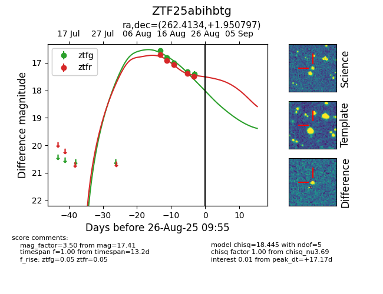

Target ZTF25abihbtg at 2025-08-26 09:55, see:
FINK: fink-portal.org/ZTF25abihbtg
Lasair: lasair-ztf.lsst.ac.uk/objects/ZTF25abihbtg
ALeRCE: alerce.online/object/ZTF25abihbtg
alt names
ZTF25abihbtg (ztf,fink)
coordinates:
equatorial (ra, dec) = (262.4134,+1.95080)
galactic (l, b) = (25.0947,+19.04062)
photometry
last ztfg=17.41, ztfr=17.50
5 ztfg, 5 ztfr detections
